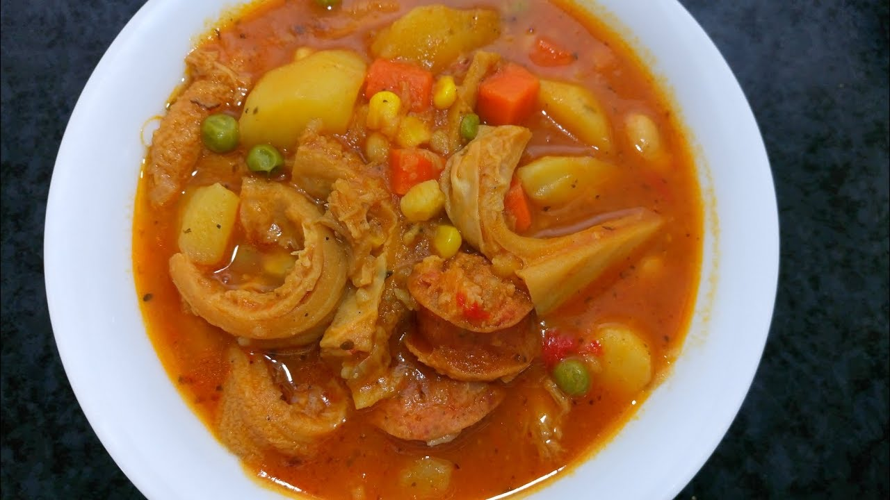

Tripe Casserole

Tripe casserole is a traditional dish of Uruguayan cuisine that stands out for its comforting flavor and soft texture. It is a stew made from tripe, which is a part of the cow's stomach. This recipe has Spanish roots, but it has become so rooted in Uruguay that it has become one of the emblematic dishes of its gastronomy. It is a stew made from tripe, which is a part of the stomach of cows and is very common in this country, known for its livestock industry. Traditionally, it is consumed most frequently during the winter.
Ingredients:
- 1 kg if tripe
- 2 chorizos
- 100 gr of bacon
- 3 potatoes
- 3 medium onions
- 2 medium carrots
- 1 medium red paprika
- ½ head of garlic
- 1 leek
- 100 gr of white beans
- 250 ml of tomato paste
- 1 pinch of salt
- 1 pinch of pepper
- oregano
Preparation:
- Peel and wash the vegetables
- Add the onion to a previously oiled saucepan. Then the paprika and garlic. Sauté.
- Chop the bacon and chorizo to your liking and add the paprika and garlic to the saucepan with the onions.
- Grate one of the carrots. Cut the other into thin slices. Chop the leek into slices and add it to the saucepan.
- Add the tomato sauce, sugar, seasonings and beans (previously soaked the night before).
- Cut the tripe into cubes (previously cooked) and add it to the saucepan.
- Add water to taste (the amount you like with more broth or less is your choice) and let it boil until the tripe is ready.
- Add the beans. Let it complete its cooking time. Turn off the heat and let it rest for 5 minutes and ready to serve.